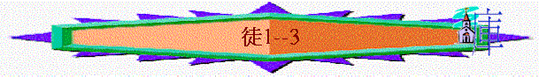

|
作主見證的經過 |
||||
|
緒論 |
預備 |
開始－在耶路撒冷作見證 |
擴張－在撒瑪利亞－猶大作見證 |
延伸－至地極作見證 |
|
1 |
２－７ |
８－１２ |
１３－２８ |
|
一）預備
（１：１－２６）１） 受主裝備（ｖ﹒３、９－１１）
ａ）經歷的裝備
ｂ）真理的裝備
２） 聽主吩咐（ｖ﹒４－ ８）
ａ）等候聖靈
ｂ）作主見證
３） 祈禱等候（ｖ﹒１２－ １４）
ａ）信心等候
ｂ）祈禱等候
４） 揀選同工（ｖ﹒１５－２６）
ａ）有原因
ｂ）有原則
ｃ）有挑選
ｄ）有搖簽
二）開始
－ 見證在耶路撒冷（２：１－４７）1）希奇的果效（２）
ａ）五旬節時候到了（ｖ﹒１）
ｂ）聖靈奇異的能力（ｖ﹒１－１３）
i）從上而來的
ii）充滿的
iii）用不完的
iv）主動的
ｃ）使徒們抓緊機會（ｖ﹒１４）
ｄ）彼得開口作見證（ｖ﹒１４－３６）
內容：有引言
有聖經
有基督
ｅ）彼得直接地呼召（ｖ﹒３７－４１）
i）直接的呼召
ii）肯定的應許
ｆ）信徒美好的見證（ｖ﹒４２－４７ａ）
i）在神道上
ii）在肢體關係上
iii）在神的關係上
ｇ）主將人數的加增（ｖ﹒４７ｂ）
２）繼續的興旺（３）
ａ）使徒奉主名而行事（ｖ﹒１－１０）
i）有應許（約３：１４、１５：１６）
ii）有能力（可１６：１７－１８）
iii）有權柄（太２１：２３、徒４：７）
iv）叫父得榮耀
ｂ）百姓聽神道而回轉（３：１２－２６、４：４）